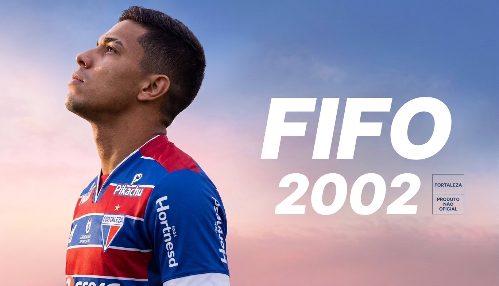
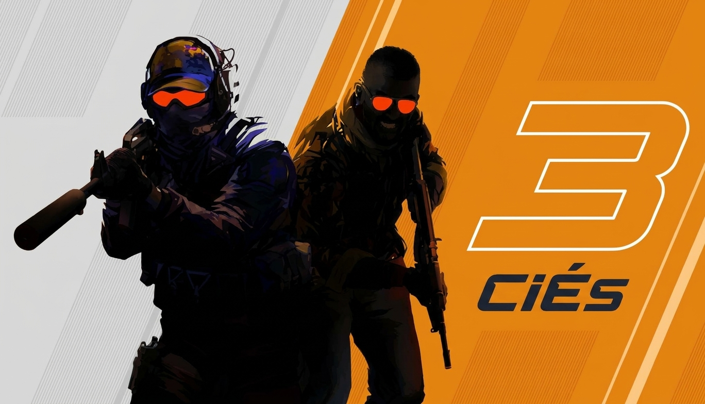
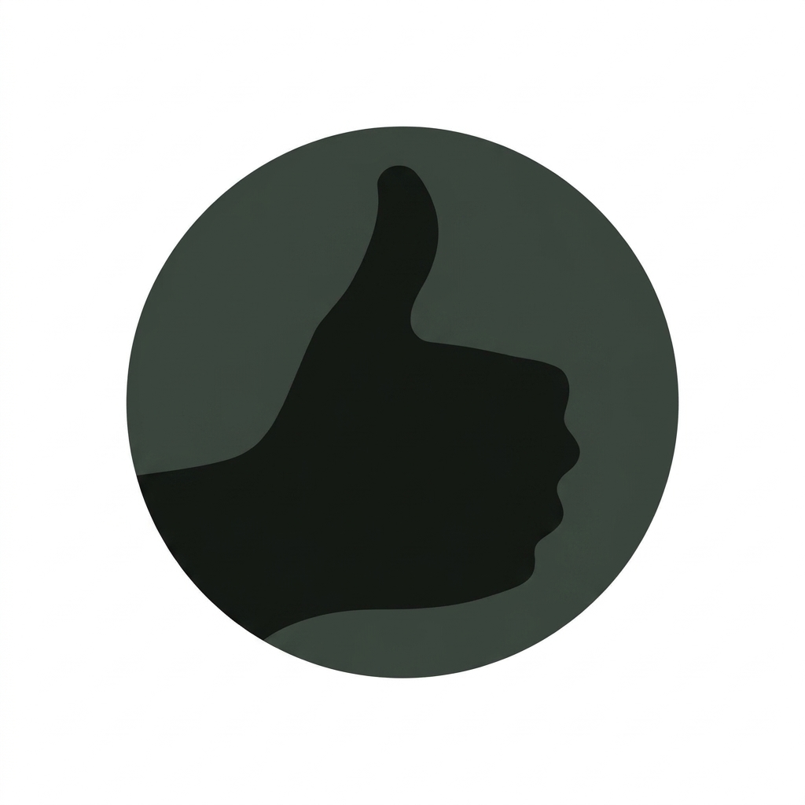

SUA IDENTIDADE NA STIM
Meu perfil
Um pouco sobre você e os jogos que fazem parte da sua história.
Perfil demonstrativo
UsuárioLKVC
@usuariolkvc
Entre uma partida e outra, sempre tem um jogo novo para conhecer.
FutebolAventuraMundo aberto
Nível do perfil01Ver insígnias →
- Jogos na biblioteca
- 4
- Horas de jogo
- 66 h
- Jogos favoritos
- 2
- Insígnias obtidas
- 1
Atividade recente
Ver biblioteca →
FutebolFIFO 2002
Última sessão: ontem
32 horas no total
AçãoCiÉs 3
Última sessão: há 2 dias
18 horas no total- Mundo aberto
GTI IV
Última sessão: há 4 dias
12 horas no total
Primeira conquista

Insígnia comum · ObtidaBoas-vindas!
Sua jornada começou: esta insígnia é concedida ao entrar pela primeira vez na Stim.
Ver todas as insígnias →MAIS DO SEU PERFIL
Cada jogo conta uma história.
Organize suas próximas partidas na biblioteca e encontre conversas sobre seus jogos na comunidade.
Perfil demonstrativo: as estatísticas e atividades são exemplos visuais, sem conexão com uma conta real.